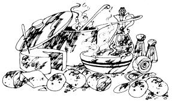
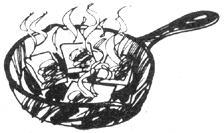

Winter's the time for stickin' close to the kitchen cookstove and doing two things: reading and eating. Folks who have a copy of The Mother Earth News Almanac (Bantam Books, 1978) can spend the next few months doing both. Because the 384-page publication is chock-full of interesting "pass the time while the storm blows outside" information, including some good stick-to-the ribs recipes.
Four of those recipes are reprinted here, and we especially recommend the cheese-potato soup and fried mush described below. The mush will fuel you up well enough to face the coldest morning that this winter, or any other, is likely to have. And the cheese-potato soup - sheer ambrosia - just like the recipe says!
Both of these formulations for simple but elegant country eating, by the way, are old Midwest farm recipes from the personal collection of Esther Shuttleworth.
There's a German dish called Himmel und Erde - Heaven and Earth - that's perfect for folks who like solid, homey cooking. The proportions are up to the cook. All it is, is cubed potatoes, cubed turnips and sliced apples cooked separately until just tender and then mashed very lightly together. Leave the mixture a bit lumpy and add salt, pepper, minced cooked bacon and chopped onion softened in the bacon fat. Sounds terrible, tastes delicious.
If you tend to have a lot of leftovers, you might do what the back country French (and Americans and Germans, maybe everybody) have done for centuries - make a "pot au feu," a kettle of soup that simmers on the back of the stove. (It's vitally important, by the way - to prevent the growth of harmful bacteria - that the rich brew is kept simmering, instead of merely warm! Start your pot off by mixing up a bigger batch of vegetable soup than your family can possibly eat. Then simply dump in each day's leftovers (plus, maybe, a little shot of vinegar from time to time for flavoring) and keep the kettle bubbling gently. The steady stream of fresh ingredients will constantly change, enrich and extend the broth's dimensions and character, and the soup will always be ready to eat, to boot (a pox on TV dinners)!
Working outside all day in windy, near-zero weather can leave a person chilled through and through. A deep bath, hot enough to relax cold-clenched muscles, will help cure an individual of this condition - but only a properly heroic prescription will fill that big, icy, gap where his or her stomach should be. The following midwestern farm recipe for Cheese-Potato Soup is one such formulation that does the latter job admirably.
For two moderately congealed people (or one suffering from an absolutely frightening case of the Cold Robies), peel and boil two slightly-larger-than-medium potatoes. Drain the tubers when they're done and save the liquid in which they were cooked. Then mash the potatoes well, add the water they were boiled in (and more liquid if necessary), and salt and pepper to taste.
Next, brown 2 to 2 1/2 tablespoons of flour in 2 1/2 tablespoons of butter (by stirring the flour and butter constantly, you can turn them a rich, golden color without burning them at all). Add the browned mixture to the potatoes and water and stir the whole savory solution as you boil it together for two or three minutes.
Finally, cut a good-sized chunk of longhorn or mild cheddar cheese into enough small pieces to fill a big soup bowl one-third full. Cover the cheese with the thick, bubbling potato-butter-flour ambrosia, dice a quarter slice of onion on top of each serving and sprinkle a few drops of vinegar over all. Break out the spoons and crackers and eat it hot! This simple but robust one-dish meal is guaranteed to warm you from the inside out.
Don't let anyone tell you different. Cold, winter weekends are the time for sleeping late and then getting up to a stick-to-the-ribs breakfast of old-timey fried mush. There's a trick to making this seemingly simple dish, though, so pay attention:
Mix together well 1 1/2 cups of yellow cornmeal, 1 1/2 teaspoons of salt and 3 tablespoons of white flour. Then stir 1 1/2 cups of cold water into the dry ingredients, mix until the thin batter is uniformly blended and IMMEDIATELY stir the mixture into 4 1/2 cups of boiling water.
You've just learned the trick. If you try to mix the cold water into the dry ingredients, and then let the batter stand while you heat the boiling water, the cornmeal blend will solidify into a shapeless blob. If, on the other hand, you pour the dry cornmeal directly into the boiling water, the meal will lump. Heat the 4 1/2 cups of water to boiling first. Hold it on standby while you quickly stir the cold water into the dry ingredients, and then dump the cold batter into the boiling liquid - and you should have no trouble.
At that point, bring the whole blended mixture to boiling and cook it until the mush thickens. Put a lid on the pan, lower the heat to simmer and let the batch cook 10 more minutes. Turn the firming glob into a buttered bread pan (about 9-by-5-by-2 1/2 inches deep), loosely cover with a piece of wax paper (so that excess moisture can escape) and let it cool overnight on the back porch or in the refrigerator.
Slice the chunk as thin as possible in the morning, flour each slab on both sides (so it'll brown more quickly and fry crisper). and drop the pieces into a skillet of vegetable shortening or lard. Eat 'em smoking hot, either plain or smothered in butter and maple syrup, and figure on about 12 slabs apiece all around the table!
|
 MOTHER EARTH NEWS STAFF This cheese-potato soup is hot, hearty and delicious - a perfect winter meal. |
 MOTHER EARTH NEWS STAFF This tasty fried mush is the perfect start for those cold winter mornings. |
|